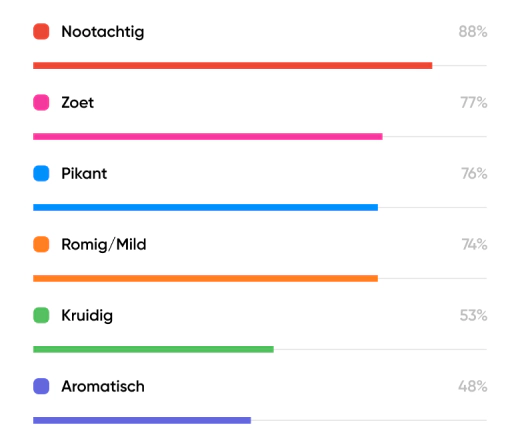

Dé perfecte smaakmatch
Ontdek de lekkerste kazen die passen bij jouw smaakprofiel.
Ontdek de wereld van kaas met jouw persoonlijke smaakprofiel. Verrijk je kennis en ontdek nieuwe kazen, recepten en inspiratie.
Ontdek de lekkerste kazen die passen bij jouw smaakprofiel.
Krijg inzicht in jouw eigen smaakprofiel op basis van zes smaken.
Leer kazen kennen die het beste passen bij jouw smaakrelevantiescore.
Swipe voor meer
Jouw smaakprofiel in 3 minuten
Beantwoord 13 vragen en maak gemakkelijk je profiel aan.
Met je eigen omgeving verrijk je jouw kaaskennis.
In je account staat jouw persoonlijke smaakprofiel en bijpassende kazen.
Verrijk je kennis en ontdek nieuwe kazen, recepten en inspiratie.
Uit onderzoek blijkt dat consumenten verdrinken in een 'gele kaaszee'. Met het platform willen wij geluksmomenten creëren, door mensen van kaas te laten genieten.
Door de techniek van het platform krijg je een goed advies. Het begint met je profiel, maar hoe vaker je een review achterlaat hoe beter de suggesties worden.
In een overweldigend kaaslandschap biedt dit platform jou een gids die je helpt de juiste keuze te maken op basis van jouw persoonlijke smaakprofiel.
Dit is een platform voor jou en jij bepaalt welke functies er worden toegevoegd. Dit zijn de nieuwe functionaliteiten die eraan komen:
Stel jouw eigen favorietenlijst samen op basis van jouw smaakprofiel.
Bekijk waar je de kazen uit jouw smaakprofiel kunt kopen.
Schrijf reviews over kazen en bekijk wat anderen van kazen vinden.